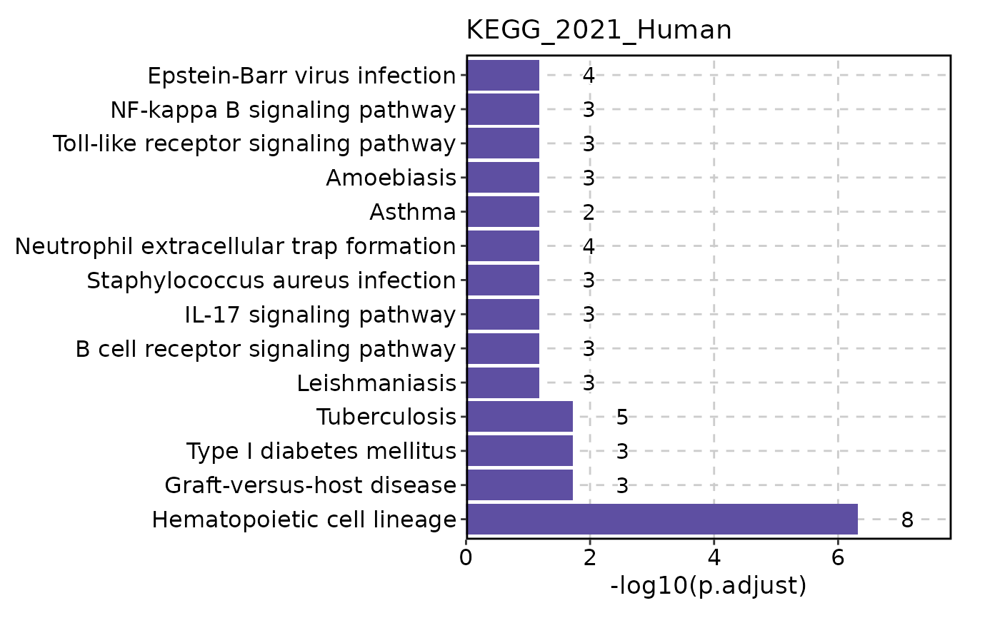
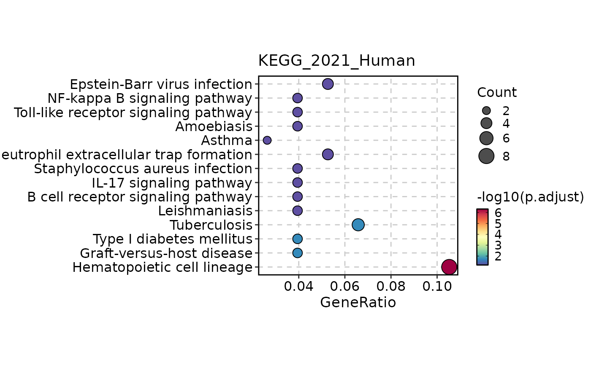
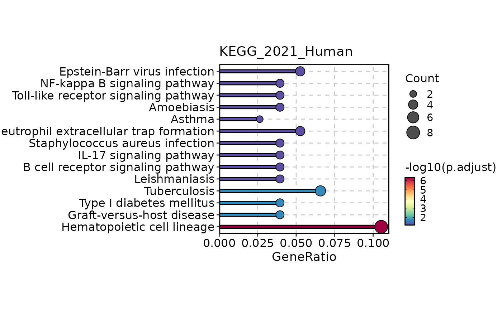
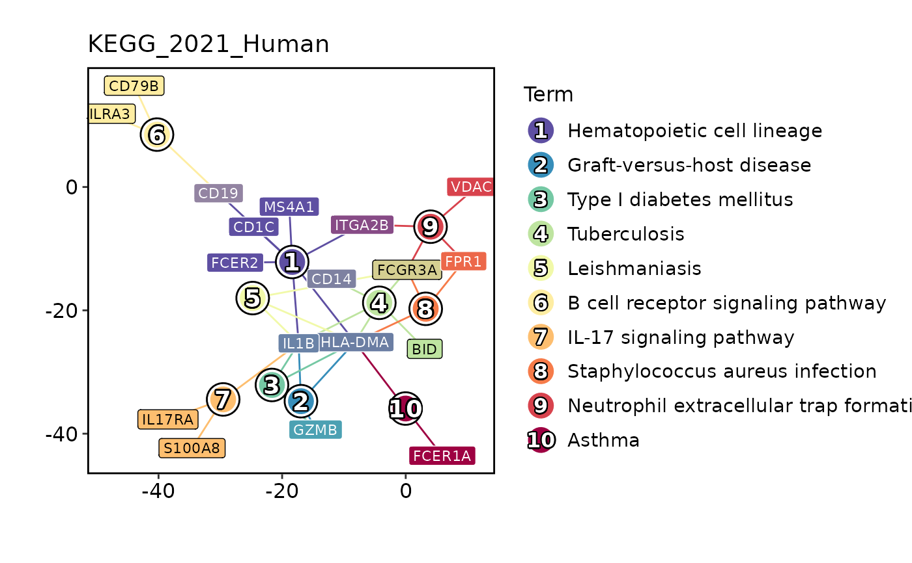

Visualize Enrichment
VizEnrich.RdVisualize enrichment (over-representation) analysis results
Arguments
- enrich
Enrichment object from RunEnrichment
- outprefix
Prefix of the output file
- devpars
List of parameters to save the plot
- more_formats
Additional formats to save the plot in addition to 'png'
- save_code
Whether to save the code to reproduce the plot
- ...
Additional arguments to pass to the plot function scplotter::EnrichmentPlot
Examples
# \donttest{
degs <- suppressWarnings(RunSeuratDEAnalysis(SeuratObject::pbmc_small, "groups", "g1", "g2"))
enrich <- RunEnrichment(degs, deg = "abs(avg_log2FC) > 1")
#> Connection changed to https://maayanlab.cloud/Enrichr/
#> Connection is Live!
#> Uploading data to Enrichr... Done.
#> Querying KEGG_2021_Human... Done.
#> Parsing results... Done.
VizEnrich(enrich)

VizEnrich(enrich, plot_type = "dot")

VizEnrich(enrich, plot_type = "lollipop")

VizEnrich(enrich, plot_type = "network")
#> Warning: Unknown or uninitialised column: `Database`.

# VizEnrich(enrich, plot_type = "enrichmap")
# VizEnrich(enrich, plot_type = "wordcloud")
# }